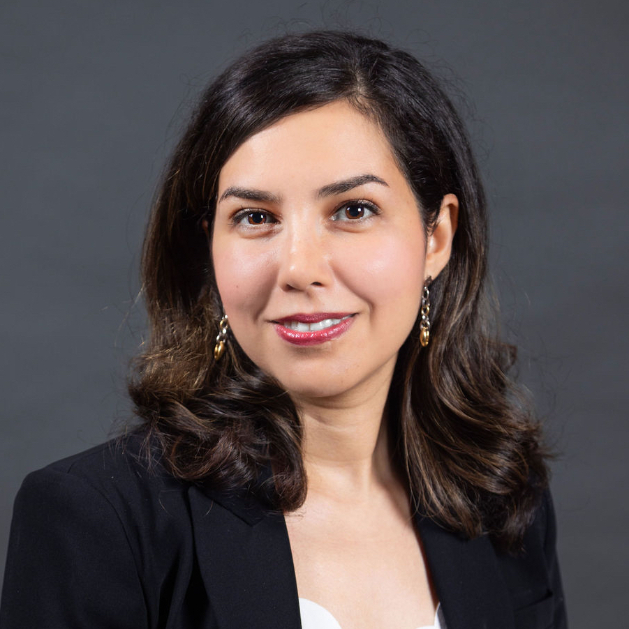

<!DOCTYPE HTML PUBLIC "-//W3C//DTD HTML 4.01 Transitional//EN">
<html>
<head>
</head>
<body></body>
</html>
<meta charset="utf-8"><meta http-equiv="Content-Language" content="en-us">
<title>SEED 2024 Home</title>
<base target="_top" />
<style type="text/css">.inner-wrapper{
            margin-left: 50%;
            width: 1150px;
        }
        .inner-wrapper img:nth-child(1){
            margin-left: -50%;
        }
        .inner-wrapper img{
        margin-left: 5px;
      }
</style>

<!--
    <table border="0" cellpadding="0" cellspacing="0" style="border-collapse: collapse" bordercolor="#111111" width="95%" height="87">
        <tr>
            <td width="40%" height="150">
                <p align="center">
                    <b><font size="5" color="#808000" face="Arial">SEED-2022</font></b>
                <p align="center"><b><font face="Arial" size="4" color="#808080">Septermber 30-October 2, 2018</font></b>
                <p align="center" style="margin-top: 0; margin-bottom: 0"><b><font face="Arial" size="4" color="#000080">&nbsp;Raleigh, North Carolina, USA</font></b>
            </td>
        </tr>
    </table>
    -->
    <p align="center"><b><font color="#808000" face="Arial" size="5">SEED 2024</font> </b></p>

    <p align="center"><b><font color="#808080" face="Arial" size="4">May 16-17, 2024</font> </b></p>

    <p align="center" style="margin-top: 0; margin-bottom:0"><b><font color="#000080" face="Arial" size="4">&nbsp;Orlando, Florida</font> </b></p>

    <!--
    <div class="warpper" style="overflow:hidden; width: 100%; height: 150px; margin-top:30px">
    <div class="inner-wrapper">  </div>
    </div>
    -->

<hr />
<p style="margin-top: 0; margin-bottom: 0"></p>

<!-- <p style="margin-top: 0; margin-bottom: 0"><b><span style="FONT-FAMILY: Arial"><font color="#000080" size="5">CONFERENCE PROCEEDINGS</font></span></b></p> -->

<h3>Farimah Farahmandi, University of Florida</h3>
<h3>Title: Unveiling Security Engine's Time Machine: A Journey Through History and a Look into the Future</h3>
<p></p>
<h3>Abstract</h3>
<p>TBA</p>

<h3>Bio</h3>
<p>Dr. Farahmandi is Yangbin Wang Rising Star Endowed Assistant Professor in the Department of Electrical and Computer Engineering (ECE) and the associate director of the Florida Institute for Cybersecurity (FICS) at the University of Florida. Her research interests include hardware security verification, formal methods, and post-silicon validation. Her research has resulted in seven books, nine book chapters, and several publications in premier ACM/IEEE journals and conferences including IEEE Transactions on Computers, IEEE Transactions on CAD, Design Automation Conference (DAC), and Design Automation and Test in Europe (DATE). Her research has been recognized by several awards including NSF CAREER Award, the 2022 Semiconductor Research Corporation Young Faculty Award, the 2022 ECE Research Excellence Award, 2023 ECE Service Excellence Award, and 2024 Execellence Award in College of Engineering at UF. She is also the recipient of four best paper nominations from IEEE/ACM ASP-DAC and IEEE/ACM DATE. She is one of the co-founders of CAD4Sec Workshop. Currently, she is the program chair of IEEE HOST 2024. Her research has been sponsored by NSF, SRC, DARPA, AFRL, DoD, ONR, Analog Devices, ANSYS, Synopsys, and Cisco. </p>


<hr />
